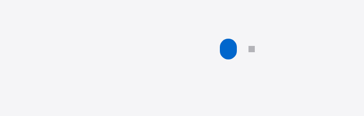
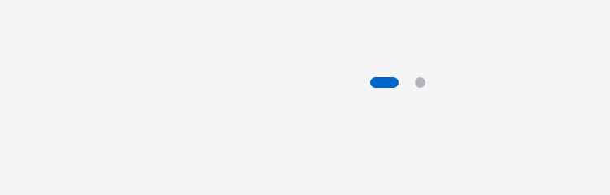

两张图都是 headless Chrome 按 desk.wxss 真实规则渲染后截的，2x 像素、同一视口，不是示意图。
选中点是一颗 17.5 × 21.5px 的大蓝球，比灰点大 3 倍多。

选中点是 17.5 × 6.5px 的蓝长条（原型 18×7），灰点 6.5×6.5（原型 7×7）。

| 元素 | 改之前 | 改之后 | 原型 |
|---|---|---|---|
| 选中点 | 17.5 × 21.5 | 17.5 × 6.5 | 18 × 7 |
| 未选中点 | 6.5 × 6.5 | 6.5 × 6.5 | 7 × 7 |
padding: 15rpx 0 +
box-sizing: content-box + background-clip: content-box，靠内圆角把背景裁成小点。width 一放大到 35rpx，内圆角就失效，背景直接铺满整个 border-box（35×43rpx）⇒ 大蓝球。.dot 只负责点击区（padding 8px 5px），
可见点在内层 .dot-i 上，宽高圆角底色都只作用在它身上。